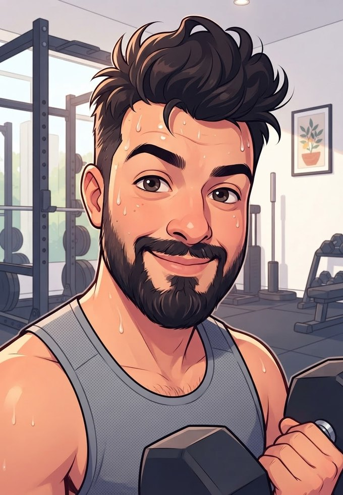

I dati stanno solo su questo telefono. Esporta ogni tanto: se il browser pulisce i dati del sito, il backup ti salva. «Ripristina dal sito» riprende le sessioni pubblicate (quelle che vede il trainer).
Finito l'allenamento, scarica il file e mandamelo in chat: lo pubblico sul sito e il tuo trainer vede lo storico aggiornato dal suo telefono, in sola lettura.
Il file non contiene le coordinate GPS: solo i nomi delle palestre.
Hai fatto sessioni di prova? Puoi ripulire. Prima di cancellare scarico sempre un backup, così puoi tornare indietro reimportandolo.
«Azzera lo storico» cancella le sessioni e tiene la scheda. «Azzera tutto» riporta anche la scheda a quella di partenza e dimentica le palestre salvate.